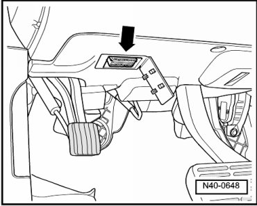
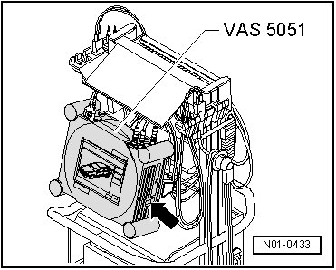

Scan Tool Testing and Procedures
VAS 5051, Connecting and Selecting Functions
Special tools, testers and auxiliary items required
• Vehicle diagnosis, testing and information system (VAS 5051)
• Diagnostic cable (VAS 5051/1) or (VAS 5051/3)
CAUTION!
• During a test drive you must always secure testing and measuring equipment on the back seat.
• These devices may be operated only by a passenger during a test drive.
- Connect diagnostic cable (VAS 5051/1) connector or (VAS 5051/3) to Data Link Connector (DLC) - arrow -.

- Switch on tester - arrow -.

The tester is operational when it displays a picture of a car.
- Switch on ignition.
- Touch Guided Fault Finding on screen.
- Select one after another:
• Brand
• Model
• Model year
• Version
• Engine code
- Confirm data entered.
Wait until tester has checked all control modules in vehicle.
- Press the Go to button and select the "Function/component selection" function.
- Select on display "Running gear"
- Select on display "Brake system"
- Select "01- On Board Diagnostic (OBD) capable system" indicated on display.
- Select on display "Anti-lock brake system".
- Select on display "Function".
Now, all possible functions of the Anti-lock Brake System (ABS) installed in the vehicle will be displayed.
- Select desired function on display.